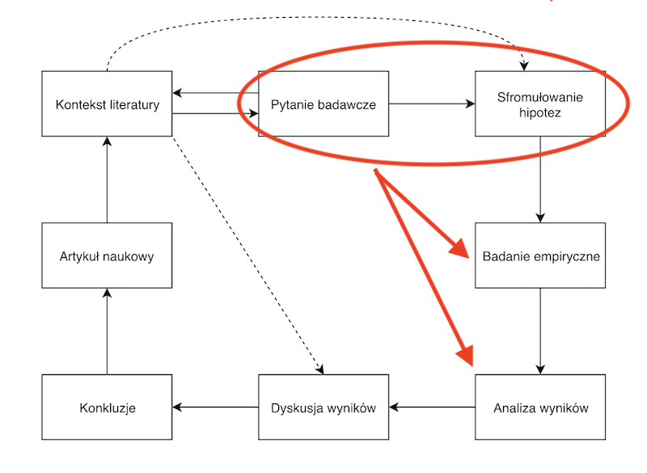
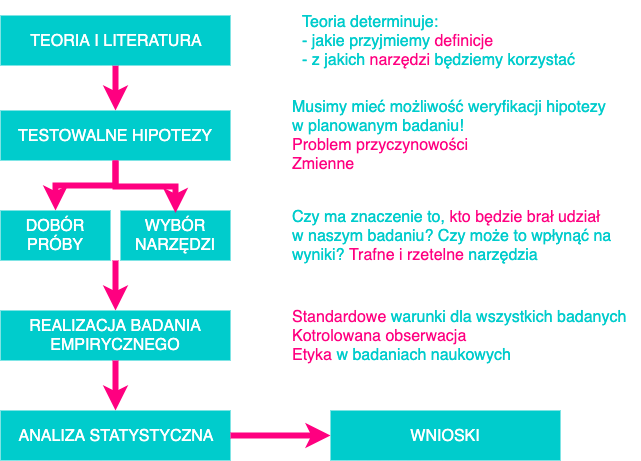

Małgorzata Basińska


Oznacza to, że gdyby interesująca nas zależność nie istniała w populacji, to prawdopoodbieństwo uzyskania w badaniu zależności tak samo silnej lub silniejszej wynosiłoby 0,05.
Oznacza to, że gdyby interesująca nas zależność nie istniała w populacji, to prawdopoodbieństwo uzyskania w badaniu zależności tak samo silnej lub silniejszej wynosiłoby 0,01.
| \(H_0\) jest fałszywa | \(H_0\) jest prawdziwa | |
|---|---|---|
| Odrzucenie \(H_0\) | :) | Błąd I rodzaju |
| Przyjęcie \(H_0\) | Błąd II rodzaju | :) |
Prawdopodobieństwo odrzucenia hipotezy zerowej, gdy jest prawdziwa to NIE to samo, co prawdopodobieństwo, że hipoteza zerowa jest prawdziwa.
Wartość p NIE określa prawdopodobieństwa tego, że hipoteza zerowa jest prawdziwa.
Prawdopodobieństwo odrzucenia hipotezy zerowej, gdy jest prawdziwa to NIE to samo, co prawdopodobieństwo, że wynik pojawił się przez przypadek.
Wartość p NIE określa prawdopodobieństwa tego, że wynik pojawił się przez przypadek.
moc testu \(= 1 - \beta\)
\(\beta\) - prawdopodobieństwo popełnienia błędu II rodzaju